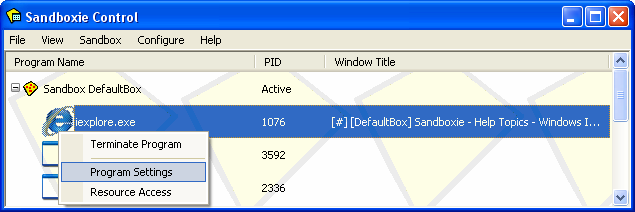
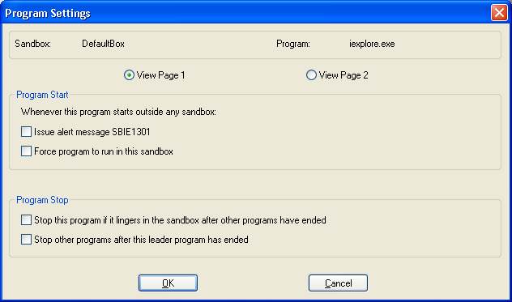
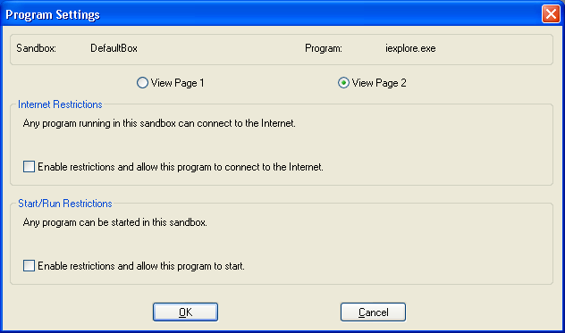

Program Settings
Overview
The Program Settings window is a quick way to configure some of the aspects of Sandboxie. To access the window, right-click on the name of a running sandboxed program to show the context menu, and select Program Settings:

(You can also use Shift+F10 or the View menu to show the context menu.)
The Program Settings window displays the sandbox where the program is running, the name of the program executable file, and checkboxes for the quick configurations settings. It is composed of two pages. Switch between the pages using the View Page 1 and View Page 2 radio buttons.
Page 1

Program Start
These settings control how Sandboxie handles programs that start outside any sandbox.
- Issue alert message SBIE1301
- Sandboxie will issue message SBIE1301 whenever this program starts outside any sandbox.
- See also Configure Menu > Program Alerts.
- Force program to run in this sandbox
- Sandboxie will automatically force the program to run in this sandbox.
- See also Sandbox Settings > Program Start > Forced Programs.
Program Stop
These settings control how Sandboxie handles this program stopping in this sandbox.
- Stop this program if it lingers in the sandbox after other programs have ended
- Sandboxie will automatically terminate this program if it remains running when all other programs stopped.
- See also Sandbox Settings > Program Stop > Lingering Programs.
- Stop other programs after this leader program has ended
- Sandboxie will terminate every other program in the sandbox when this program stops.
- See also Sandbox Settings > Program Stop > Leader Programs.
Page 2

These settings control which restrictions apply to this program.
Internet Restrictions:
- Enable restrictions and allow this program to connect to the Internet
- Enable Internet restrictions in the sandbox, which means no program can connect to the Internet unless explicitly allowed.
- Additionally, explicitly allows this program to connect to the Internet from this sandbox.
- See also Sandbox Settings > Restrictions > Internet Access.
Start/Run Restrictions:
- Enable restrictions and allow this program to start
- Enable Start/Run restrictions in the sandbox, which means no program can start unless explicitly allowed.
- Additionally, explicitly allows this program to start and run in this sandbox.
- See also Sandbox Settings > Restrictions > Start/Run Access.